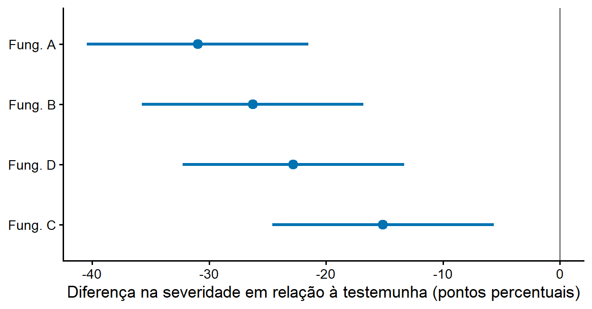

12Como os resultados científicos devem ser comunicados?
12.1 Objetivos de aprendizagem
Importante
Ao concluir este capítulo, o leitor deverá ser capaz de:
transformar resultados estatísticos em mensagens científicas claras;
descrever os métodos estatísticos com detalhe suficiente para que possam ser avaliados e reproduzidos;
relatar estimativas com unidades, incerteza e precisão numérica adequada;
usar valores-P de forma complementar, sem substituí-los por afirmações dicotômicas;
decidir quando usar tabelas, figuras ou texto;
construir tabelas e figuras de resultados diretamente a partir do R;
redigir interpretações que distingam evidência estatística de relevância biológica;
reconhecer e evitar erros comuns na comunicação de resultados.
12.2 Por que a comunicação importa
Uma análise só cumpre seu propósito quando seus resultados chegam a outras pessoas de forma correta e compreensível. Revisores, editores, outros pesquisadores, extensionistas, produtores e gestores tomam decisões com base no que leem em artigos, relatórios e apresentações. Uma análise impecável comunicada de forma ambígua, incompleta ou exagerada produz conclusões erradas tanto quanto uma análise malfeita.
Os capítulos anteriores mostraram como delinear estudos, organizar e explorar dados, construir figuras, raciocinar sobre incerteza e analisar diferentes tipos de dados. Este capítulo trata da etapa final: como transformar tudo isso em texto, tabelas e figuras que permitam ao leitor compreender o que foi feito, o que foi encontrado e quão confiáveis são as conclusões.
Três princípios orientam o capítulo. Primeiro, a comunicação deve servir à questão biológica, e não aos procedimentos estatísticos. Segundo, a evidência deve ser mostrada, e não apenas declarada: estimativas, incerteza e dados, em vez de adjetivos e asteriscos. Terceiro, o relato deve ser reprodutível: outra pessoa deve conseguir entender exatamente como os resultados foram obtidos.
Importante
Comunicar resultados não é decorar a análise; é permitir que o leitor avalie a evidência e chegue às próprias conclusões.
12.3 Do resultado estatístico à mensagem científica
12.3.1 Qual é a mensagem principal?
Antes de escrever, identifique a mensagem principal de cada resultado em uma frase, em linguagem biológica. Compare:
“O efeito do tratamento foi significativo (P < 0,001).”
“Todos os programas de fungicida reduziram a severidade em relação à testemunha, e o programa A foi o mais eficaz, com uma redução de cerca de 31 pontos percentuais.”
A primeira frase descreve um procedimento; a segunda descreve um achado. Os números do procedimento continuam importantes, mas como apoio à mensagem, e não como a mensagem.
12.3.2 Público e formato
A mesma análise pode ser comunicada de formas diferentes conforme o público. Em um artigo científico, os leitores esperam detalhes metodológicos completos, estimativas com incerteza e uma discussão das limitações. Em um relatório técnico ou boletim de extensão, a ênfase recai sobre a magnitude prática dos efeitos e as recomendações. Em uma apresentação oral, uma ou duas figuras bem planejadas valem mais do que tabelas extensas. Em todos os casos, porém, as estimativas e sua incerteza devem ser corretas e coerentes entre si.
12.4 Relatando os métodos estatísticos
A seção de métodos deve permitir que um leitor experiente avalie se a análise é adequada e, idealmente, a reproduza. Ela deve informar:
o delineamento do estudo e a unidade experimental, incluindo o número de repetições e de subamostras (Capítulo 2);
a variável resposta e como foi medida, com unidades;
o modelo estatístico: tipo de modelo (linear, linear generalizado, não linear, misto), efeitos incluídos (tratamentos, blocos, interações, efeitos aleatórios) e, para MLGs, a distribuição e a função de ligação;
como os pressupostos foram avaliados e o que foi feito quando não foram atendidos;
as comparações de interesse (contrastes planejados, comparações com a testemunha, todas as comparações dois a dois) e o ajuste para multiplicidade usado;
como foram tratados valores perdidos e observações excluídas, com justificativa;
os programas e pacotes usados, com suas versões.
Um parágrafo de métodos para o ensaio usado neste capítulo poderia ser:
A severidade da doença (% da área foliar com sintomas) foi analisada com um modelo linear com efeitos fixos de bloco e de tratamento. Os pressupostos de normalidade e homogeneidade das variâncias foram avaliados por gráficos de resíduos. Os efeitos de cada programa de fungicida em relação à testemunha foram estimados como diferenças entre médias marginais, com intervalos de confiança de 95% ajustados pelo método de Dunnett. As análises foram feitas no R (versão 4.5.2) com o pacote emmeans (versão 2.0.1).
Note que as versões no parágrafo acima não foram digitadas: foram inseridas automaticamente pelo código R no momento em que este capítulo foi gerado. Esse recurso é discutido adiante.
As versões de todos os pacotes carregados podem ser obtidas com sessionInfo(), cuja saída é um bom candidato a material suplementar.
Dica
Descreva a análise que foi feita, e não a análise que se pretendia fazer. Se o modelo foi modificado depois de examinar os resíduos (por exemplo, trocando um modelo linear por um binomial negativo), relate isso e explique por quê.
12.5 Relatando os resultados
12.5.1 Estimativas, incerteza e unidades
O núcleo de um resultado é uma estimativa com unidades e com sua incerteza (Capítulo 6). Para o ensaio simulado deste capítulo, os efeitos dos fungicidas em relação à testemunha são:
contrast estimate SE df lower.CL upper.CL
Fung. A - Testemunha -31.0 3.35 12 -40.4 -21.51
Fung. B - Testemunha -26.3 3.35 12 -35.7 -16.81
Fung. C - Testemunha -15.1 3.35 12 -24.6 -5.66
Fung. D - Testemunha -22.8 3.35 12 -32.3 -13.33
Results are averaged over the levels of: block
Confidence level used: 0.95
Conf-level adjustment: dunnettx method for 4 estimates
A partir dessa saída, uma frase de resultados informativa seria: “O programa A reduziu a severidade em 31 pontos percentuais em relação à testemunha (IC 95%: 21 a 40)”. Ela informa a direção (redução), a magnitude (31 pontos), a unidade (pontos percentuais), a comparação (em relação à testemunha) e a incerteza (o intervalo).
12.5.2 Valores-P: como e quando
Valores-P podem complementar as estimativas, mas não substituí-las. Quando relatados:
informe o valor exato (P = 0,03), e não apenas “P < 0,05” ou “n.s.”; para valores muito pequenos, “P < 0,001” é suficiente;
não use o valor-P como medida do tamanho do efeito;
não interprete P > 0,05 como evidência de ausência de efeito (Capítulo 6);
evite asteriscos como única forma de comunicar a evidência.
12.5.3 Precisão numérica e arredondamento
O número de casas decimais deve refletir a precisão da medida e da estimativa, e não a capacidade da calculadora. Uma severidade média de 23,4719% sugere uma precisão inexistente quando as avaliações visuais variam em vários pontos percentuais. Regras práticas úteis:
relate médias e efeitos com dois ou três algarismos significativos, coerentes com o erro padrão;
relate estatísticas de teste com uma ou duas casas decimais e valores-P com dois algarismos significativos;
use o mesmo número de casas decimais para grandezas comparáveis em uma tabela;
arredonde apenas no final, nunca em etapas intermediárias dos cálculos.
12.5.4 Linguagem
A forma de escrever influencia o que o leitor conclui. Alguns cuidados:
“significativo” tem um sentido estatístico e um sentido comum (“importante”). Prefira “estatisticamente significativo” quando for esse o sentido, ou, melhor ainda, descreva a magnitude e a incerteza;
evite “tendência à significância” ou “marginalmente significativo” para valores-P próximos de 0,05; descreva a estimativa e seu intervalo;
use linguagem causal (“o fungicida reduziu”) apenas quando o delineamento a justificar; em estudos observacionais, prefira “esteve associado a” (Capítulo 6);
não confunda “não houve diferença” com “não houve evidência de diferença”.
Tabela 12.1: Exemplos de redação de resultados.
Em vez de
Prefira
O tratamento foi significativo (P < 0,05).
O programa A reduziu a severidade em 31 p.p. (IC 95%: 21 a 40) em relação à testemunha.
Não houve diferença entre B e C (P = 0,08).
A diferença entre B e C foi de 9 p.p., mas o intervalo (−1 a 19) é compatível tanto com nenhuma diferença quanto com uma diferença considerável.
A severidade foi de 18,3472%.
A severidade média foi de 18% (IC 95%: 15 a 22).
A temperatura causou o aumento da doença (levantamento).
A doença foi maior em lavouras com temperaturas mais altas.
Os resultados mostraram uma tendência à significância (P = 0,06).
A estimativa foi de −8 p.p. (IC 95%: −16 a 0,4); os dados são compatíveis com efeitos desde nulos até moderados.
12.6 Tabelas, figuras ou texto?
12.6.1 Quando usar cada um
Cada formato tem sua função:
texto: para um ou dois números importantes, que fazem parte de uma frase;
tabelas: quando os valores exatos importam e precisam ser consultados, ou quando há muitas grandezas diferentes (médias, intervalos, tamanhos de amostra) para vários grupos;
figuras: quando o padrão, a comparação ou a forma de uma relação importam mais do que os valores exatos (Capítulo 5).
Os mesmos resultados não devem ser repetidos em tabela e em figura no corpo do texto; escolha o formato que comunica melhor e, se necessário, coloque o outro no material suplementar.
12.6.2 Anatomia de uma boa tabela
Uma boa tabela de resultados:
tem um título que permite entendê-la sem ler o texto, informando o que é mostrado, a unidade e o tamanho da amostra;
organiza as linhas em uma ordem lógica (testemunha primeiro, depois os tratamentos em ordem de dose ou de eficácia);
coloca na mesma coluna grandezas comparáveis, com o mesmo número de casas decimais;
mostra estimativas e intervalos, e não apenas médias com letras;
explica em nota de rodapé as abreviações e o método de ajuste para multiplicidade;
evita linhas verticais e bordas desnecessárias.
12.6.3 Tabelas a partir do R
Digitar números de uma saída do R em uma planilha ou em um editor de texto é uma fonte frequente de erros. Uma alternativa é construir a tabela diretamente a partir dos objetos da análise. O exemplo abaixo combina as médias marginais e os efeitos em relação à testemunha em uma única tabela:
medias <-as.data.frame(confint(emm))efe <-as.data.frame(efeitos)tabela <-data.frame(Tratamento = medias$treatment,`Severidade média (%)`=sprintf("%.1f (%.1f a %.1f)", medias$emmean, medias$lower.CL, medias$upper.CL),`Efeito vs. testemunha (p.p.)`=c("—", sprintf("%.1f (%.1f a %.1f)", efe$estimate, efe$lower.CL, efe$upper.CL)),check.names =FALSE)
knitr::kable(tabela, align ="lcc")
Tabela 12.2: Severidade média da doença e efeito de cada programa de fungicida em relação à testemunha (ensaio simulado; quatro blocos). Valores entre parênteses: intervalos de confiança de 95%; os intervalos dos efeitos foram ajustados pelo método de Dunnett.
Tratamento
Severidade média (%)
Efeito vs. testemunha (p.p.)
Testemunha
48.2 (43.0 a 53.3)
—
Fung. A
17.2 (12.0 a 22.3)
-31.0 (-40.4 a -21.5)
Fung. B
21.9 (16.7 a 27.0)
-26.3 (-35.7 a -16.8)
Fung. C
33.0 (27.9 a 38.2)
-15.1 (-24.6 a -5.7)
Fung. D
25.3 (20.2 a 30.5)
-22.8 (-32.3 a -13.3)
Como a tabela é gerada pelo código, qualquer mudança nos dados ou no modelo é refletida automaticamente, sem risco de erro de transcrição. Pacotes como gt e flextable oferecem recursos adicionais de formatação e exportação para Word.
12.7 Figuras de resultados
Os princípios do Capítulo 5 aplicam-se integralmente às figuras de resultados: mostrar os dados sempre que possível, representar a incerteza, ordenar as categorias de forma significativa e escrever legendas autoexplicativas. Para comparações com uma testemunha, um gráfico de efeitos comunica diretamente a magnitude e a precisão de cada efeito (Figura 12.1).
efe$tratamento <-sub(" - Testemunha", "", efe$contrast)efe$tratamento <-reorder(efe$tratamento, -efe$estimate)ggplot(efe, aes(x = estimate, y = tratamento, xmin = lower.CL, xmax = upper.CL)) +geom_vline(xintercept =0, colour ="grey50") +geom_pointrange(colour ="#0072B2", size =0.6, linewidth =1.1) +labs(x ="Diferença na severidade em relação à testemunha (pontos percentuais)",y =NULL) +theme_classic(base_size =13)

Figura 12.1: Efeito de cada programa de fungicida sobre a severidade da doença em relação à testemunha (ensaio simulado; quatro blocos). Pontos: diferenças estimadas entre médias marginais; barras: intervalos de confiança de 95% ajustados pelo método de Dunnett. A linha vertical marca a ausência de efeito.
Para submissão, a figura deve ser salva nas dimensões e no formato exigidos pela revista (Capítulo 5):
ggsave("figures/fig2_efeitos.pdf", width =17, height =9, units ="cm")
12.8 Escrevendo a interpretação
A discussão de um trabalho conecta os resultados à questão biológica. Uma boa interpretação:
começa pela resposta à questão que motivou o estudo;
distingue evidência estatística de relevância biológica: um efeito pode ser claro, mas pequeno demais para importar, ou grande, mas estimado com pouca precisão (Capítulo 6);
compara os resultados com estudos anteriores, explicando concordâncias e discordâncias;
reconhece as limitações do delineamento e da análise: uma única safra, um único local, um isolado, poucas repetições;
indica a população à qual as conclusões se aplicam e evita generalizações além dela;
propõe hipóteses para estudos futuros quando os resultados forem exploratórios.
Aviso
A discussão não é o lugar para transformar resultados não significativos em “tendências” nem para apresentar como confirmados padrões descobertos durante a exploração dos dados.
12.9 Relatórios reprodutíveis
12.9.1 Números gerados pelo código
Uma das fontes mais comuns de erro em artigos científicos é a transcrição manual de números da saída da análise para o texto. Em documentos Quarto, como este livro, é possível inserir resultados diretamente no texto com código R em linha. Por exemplo, o texto a seguir não contém nenhum número digitado à mão:
O programa A reduziu a severidade em 31,0 pontos percentuais em relação à testemunha (IC 95%: 21,5 a 40,4).
No arquivo-fonte, essa frase é escrita assim:
O programa A reduziu a severidade em `r fmt(efe_A$estimate)`pontos percentuais em relação à testemunha (IC 95%: ...).
Se os dados forem corrigidos ou o modelo for alterado, o texto é atualizado automaticamente na próxima renderização. O Capítulo 13 aprofunda esse e outros aspectos da pesquisa reprodutível.
12.9.2 Material suplementar, dados e código
Cada vez mais revistas exigem ou incentivam a disponibilização dos dados e do código usados nas análises. Mesmo quando não é obrigatório, publicar os dados organizados (Capítulo 3), o dicionário de dados e os scripts de análise em um repositório permanente (como Zenodo, Figshare, OSF ou o repositório institucional) permite que outros verifiquem, reutilizem e ampliem o trabalho, e aumenta a confiança nos resultados (Wilkinson et al. 2016).
12.10 Pesquisa na prática: redigindo os resultados de um ensaio de fungicidas
DicaPesquisa revisitada: Comunicando a eficácia de fungicidas
Retome um ensaio de campo como o do míldio do manjericão apresentado no Capítulo 1 (McGrath 2020): vários programas de fungicida e uma testemunha, em blocos casualizados, com a severidade avaliada no fim da safra. Usando as análises deste capítulo como modelo, prepare:
um parágrafo de métodos que informe o delineamento, a unidade experimental, o modelo, as comparações e o ajuste para multiplicidade;
uma tabela com as médias e os efeitos em relação à testemunha, com intervalos de confiança;
uma figura que mostre os efeitos e sua incerteza;
um parágrafo de resultados em que cada afirmação venha acompanhada de uma estimativa com unidades e incerteza;
um parágrafo de discussão que diga se as reduções observadas são relevantes para a produção comercial e quais limitações impedem generalizar os resultados.
Em seguida, troque o texto com um colega e verifique: é possível entender o que foi feito e o que foi encontrado sem ver a saída do R?
12.11 Erros comuns
12.11.1 Relatar apenas valores-P ou letras
O leitor não consegue avaliar a magnitude nem a precisão dos efeitos.
12.11.2 Omitir a unidade experimental e o número de repetições
Sem essa informação, não é possível avaliar a adequação da análise.
12.11.3 Não informar o que as barras de erro representam
Desvio padrão, erro padrão e intervalo de confiança têm significados muito diferentes (Capítulo 5).
12.11.4 Excesso de casas decimais
Números como 23,4719% sugerem uma precisão inexistente.
12.11.5 Repetir os mesmos resultados em tabela, figura e texto
A redundância ocupa espaço e dificulta a leitura.
12.11.6 Transcrever números à mão
Cópias manuais introduzem erros difíceis de detectar.
12.11.7 Linguagem causal sem delineamento que a justifique
Associações observacionais não são efeitos causais.
12.11.8 Confundir “não significativo” com “sem efeito”
A ausência de evidência não é evidência de ausência.
12.11.9 Descrever a análise planejada em vez da análise feita
Mudanças no modelo devem ser relatadas e justificadas.
12.11.10 Generalizar além das condições estudadas
Uma safra, um local ou um isolado não representam todas as condições.
12.12 Um fluxo de trabalho para comunicar resultados
Figura 12.2: Um fluxo de trabalho para comunicar resultados científicos.
12.13 Lista de verificação para a comunicação de resultados
Antes de submeter um manuscrito ou relatório, pergunte:
A questão biológica e a mensagem principal estão claras?
O delineamento, a unidade experimental e o número de repetições estão descritos?
O modelo estatístico, as comparações e o ajuste para multiplicidade estão descritos?
Os programas e pacotes estão citados, com versões?
Cada resultado principal tem uma estimativa com unidades e incerteza?
Os valores-P, quando relatados, são exatos e complementares às estimativas?
O número de casas decimais é coerente com a precisão?
As figuras mostram os dados e informam o que as barras representam?
As tabelas têm títulos autoexplicativos e notas de rodapé?
O mesmo resultado não aparece repetido em tabela e figura?
A linguagem causal é justificada pelo delineamento?
A discussão distingue evidência estatística de relevância biológica?
As limitações e o escopo das conclusões estão explícitos?
Os números do texto foram gerados pelo código, ou conferidos com a saída da análise?
Os dados e o código estão disponíveis?
12.14 Resumo do capítulo
Comunicar resultados é a etapa em que uma análise se torna conhecimento compartilhado. Uma boa comunicação parte da questão biológica e transforma resultados estatísticos em mensagens científicas, sustentadas por estimativas com unidades e incerteza. Os métodos devem ser descritos com detalhe suficiente para serem avaliados e reproduzidos; os valores-P, quando usados, complementam as estimativas; e a precisão numérica deve refletir a precisão real das medidas. Tabelas, figuras e texto têm funções diferentes e devem ser escolhidos de acordo com o que precisa ser comunicado. Gerar tabelas, figuras e números diretamente a partir do código elimina erros de transcrição e torna o relato reprodutível. Por fim, a interpretação deve distinguir evidência estatística de relevância biológica e deixar claros as limitações e o escopo das conclusões.
12.15 Conceitos-chave
Ao concluir este capítulo, você deverá ser capaz de explicar:
mensagem principal;
relato de métodos estatísticos;
estimativa com incerteza;
precisão numérica;
linguagem causal;
tabela de resultados;
gráfico de efeitos;
código em linha;
relatório reprodutível;
material suplementar;
dados abertos.
12.16 Exercícios
12.16.1 Exercício 1. Reescrevendo resultados
Reescreva as frases abaixo de forma mais informativa, inventando valores plausíveis quando necessário:
“O fungicida foi significativamente melhor que a testemunha (P < 0,05).”
“Não houve efeito da cultivar sobre a severidade (P = 0,12).”
“A severidade média foi de 34,58219%.”
12.16.2 Exercício 2. Parágrafo de métodos
Escreva o parágrafo de métodos estatísticos de um experimento da sua área, informando o delineamento, a unidade experimental, o modelo, as comparações, o ajuste para multiplicidade e os programas usados.
12.16.3 Exercício 3. Da saída do R à tabela
Usando um conjunto de dados fornecido pelo professor, ajuste um modelo, obtenha as médias marginais e os contrastes de interesse com o emmeans e construa uma tabela de resultados diretamente no R, com título e nota de rodapé.
12.16.4 Exercício 4. Avaliação de um artigo publicado
Escolha um artigo recente de Fitopatologia e avalie:
se o delineamento e a unidade experimental estão descritos;
se o modelo estatístico e o ajuste para multiplicidade estão descritos;
se os resultados são relatados como estimativas com incerteza;
se as figuras informam o que as barras de erro representam;
se a linguagem causal é justificada;
se os dados e o código estão disponíveis.
12.16.5 Exercício 5. Texto reprodutível
Em um documento Quarto, ajuste um modelo simples e escreva uma frase de resultados em que todos os números sejam inseridos com código R em linha. Altere um valor dos dados e renderize novamente para verificar que o texto se atualiza.
12.17 Reflexão
Uma análise só está completa quando outra pessoa consegue entender o que foi feito, o que foi encontrado e quão confiáveis são as conclusões.
Discuta essa afirmação usando um exemplo da Fitopatologia.
12.18 Próximos passos
Comunicar bem os resultados depende de saber exatamente como foram obtidos. O Capítulo 13 integra os conceitos deste livro em um fluxo de trabalho de pesquisa reprodutível: organização de projetos, documentação das análises, relatórios dinâmicos com o Quarto e compartilhamento de dados e código.
McGrath, M. T. 2020. Efficacy of Conventional Fungicides for Downy Mildew in Field-Grown Sweet Basil in the United States. Plant Disease 104:2967–2972. https://doi.org/10.1094/PDIS-11-19-2382-RE.
Wilkinson, M. D., Dumontier, M., Aalbersberg, Ij. J., Appleton, G., Axton, M., Baak, A., e others. 2016. The FAIR Guiding Principles for scientific data management and stewardship. Scientific Data 3:160018. https://doi.org/10.1038/sdata.2016.18.